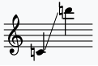

Being the Recorder
Professional Handcraft Wood Recorders
Family
in C
Soprano in C5
The soprano recorder in C5, also known as the descant, is the third-smallest instrument of the modern recorder family and is usually played as the highest voice in four-part ensembles (SATB = soprano, alto, tenor, bass). Since its finger spacing is relatively small, it is often used in music education for children first learning to play an instrument.
The soprano recorder is an octave above the level of the human soprano voice. Its lowest note is c4 (this article is notated using Helmholtz notation, in scientific pitch notation the same note is represented as C5), the normal range is c5–d7
Tenor in C4
The tenor recorder is a member of the recorder family. It has the same form as a soprano (or descant) recorder and an alto (or treble) recorder, but it produces a lower sound than either; a still lower sound is produced by the bass recorder and great bass recorder.
in F
Sopranino in F5
The sopranino recorder is the second smallest recorder of the modern recorder family, and was the smallest before the 17th century.
This modern instrument has F5 as its lowest note, and its length is 20 cm. It is almost always made from soft European or tropical hardwoods.
Alto in F4
The alto recorder in F, also known as a treble (and, historically, as consort flute and common flute) is a member of the recorder family. Up until the 17th century the alto instrument was normally in G4 instead of F4.
The alto is between the soprano and tenor in size, and is correspondingly intermediate in pitch. It has the same general shape as a soprano, but is larger in all dimensions, resulting in a lower pitch for a given fingering.
Construction
Price
Sopranino
120USD
Soprano
90USD
Alto
180USD
Tenor
250USD